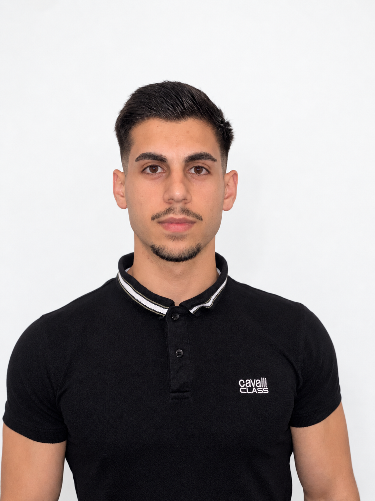

COMPUTER SCIENCE / NICOSIA, CYPRUS
Hi, I'm Arestis.
I build useful systems from code, data & curiosity.
My work spans software development and computer vision—from gesture recognition and edge AI simulation to medical image analysis.

Curious by nature.
Builder by practice.
My Computer Science studies at the University of Cyprus have given me a foundation for practical work in research, IT operations, and software projects. I enjoy making complex systems clearer, more reliable, and more useful for the people who depend on them.
02 / SELECTED WORK
Projects that
put ideas to work.
Two projects at the intersection of practical engineering, data, and human interaction.
03 / EXPERIENCE
Learning
by doing.
Research, technology operations, and engineering work across different environments.
CYENS Centre of Excellence
Research Scientist · Medical Imaging
Developing a research model to identify possible endometrial lesions in medical images.
KIOS Research & Innovation Center
Special Scientist Intern · Project Support
Built CARLA simulation pipelines for urban drone imagery and benchmark datasets used in edge AI evaluation.
PricewaterhouseCoopers
Information Technology Intern
Supported user lifecycle operations and standardized Microsoft 365 onboarding and offboarding workflows.
Cyprus Telecommunications Authority
Network & Services Operations Intern
Assisted with network configuration, testing, and troubleshooting in telecom operations.
National Guard of Cyprus
Reserve Officer · Raider Squadron
Served as a Second Lieutenant and ranked 11th of 117 at Infantry Officer Reserve School.
04 / TOOLKIT
The tools behind
the work.
A practical mix of languages, systems, and computer vision tools.
Programming
Java · Python · SQL · JavaScript · C
Web & backend
HTML · CSS · Bootstrap · Spring Boot · REST APIs
Computer vision
TensorFlow · OpenCV · MediaPipe · Ultralytics YOLO
Tools & platforms
Git · Linux / Unix · Docker · CARLA Simulator
05 / EDUCATION
A strong foundation.
Always learning.
BSc Computer Science
University of Cyprus
GPA 8.82 / 10
06 / CONTACT
Have a role or an idea?
Let's talk.
I'm interested in software engineering and technology opportunities where I can keep learning and contribute meaningful work.
Send an email